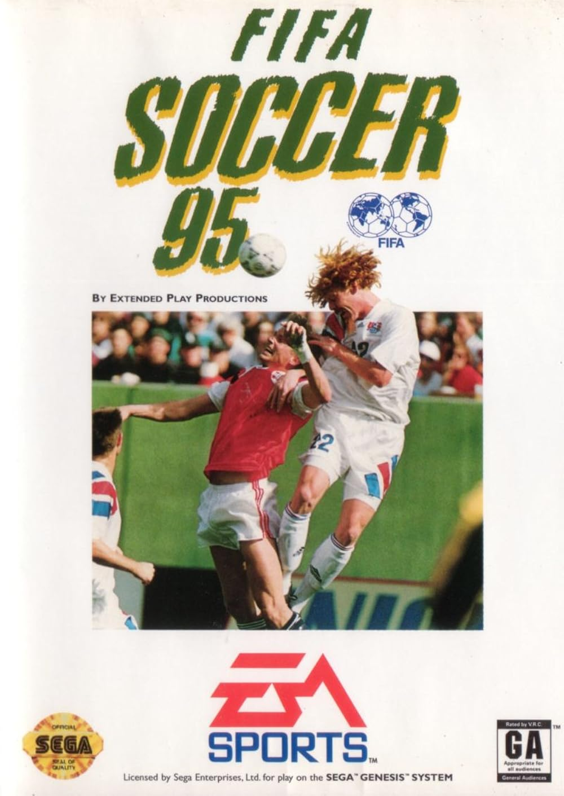

Depois do lançamento de FIFA International Soccer em 1993, a EA
decidiu que o jogo não seria um projeto isolado.
Já em 1994 chegou FIFA 95, trazendo pela primeira vez times de clubes de verdade, com equipes de oito
ligas nacionais, incluindo Brasil, Alemanha, Itália, Espanha e Inglaterra. Antes disso, o jogo trazia
apenas seleções nacionais.
A partir desse momento, um novo título passou a ser lançado todos os anos, e cada versão tentava
corrigir as limitações da anterior e trazer alguma novidade para a experiência.

FIFA 95, o primeiro título da série a incluir clubes.
O salto para o 3D
FIFA 97: uma nova dimensão
Em 1997 aconteceu uma das mudanças mais marcantes da década: FIFA 97 se tornou o primeiro jogo da
série a rodar com gráficos tridimensionais em tempo real, disponível para PlayStation,
PC e Sega Saturn.
Essa edição também foi a primeira a utilizar nomes e posições reais dos jogadores, permitindo até
editar times e atletas dentro do próprio jogo. Novas ligas, como a escocesa, também passaram a fazer
parte do título.
A diferença entre as primeiras edições e FIFA 97 mostrava bem o ritmo da evolução: de um jogo com
visual totalmente bidimensional, a franquia passou a oferecer campos, jogadores e
câmeras totalmente em três dimensões, aproximando ainda mais a experiência de uma partida
real.
Gameplay do FIFA 97, o primeiro com gráficos em 3D.
A virada dos anos 2000
Temporadas, internet e mais realismo
Com a chegada dos anos 2000, a franquia continuou buscando novidades. FIFA 2000 permitiu, pela
primeira vez, jogar temporadas seguidas, com disputas de acesso e rebaixamento entre divisões — ainda
que times menores continuassem de fora.
O ano seguinte trouxe uma mudança ainda maior: FIFA 2001 foi o primeiro título da série a permitir
partidas online. A edição também estreou um novo motor gráfico, com rostos únicos
para alguns jogadores e uma barra de força para os chutes.
Rumo a uma nova era
Durante os anos 90 e início dos anos 2000, o FIFA ganhou
novas ligas, recursos, modos de jogo e melhorias gráficas.
A franquia estava cada vez maior.
Anos depois, uma mudança ainda maior faria o nome FIFA sair
da capa do jogo. É isso que veremos na próxima página.